当アプリはどうにかしてナビ音声を変更したいがために素人が作ったナビゲーションアプリです。
面倒と感じない方は以下の手順に従ってインストールしてください。
必要なもの
・Android端末
・クレジットカード(Mapboxの登録に必須)
Mapboxには無料枠があり超過した場合のみ費用がかかりますが、
取得したトークンを公開したり配布しない限りは、個人利用で無料枠を超過するのはほぼ不可能です。
📥 ダウンロード
下のボタンから navi.apk をダウンロードできます。
navi.apk をダウンロード⚙️ インストール手順
- 上のボタンから navi.apk をダウンロードします。
- Androidの設定を開きます。
- 設定 → セキュリティ → 提供元不明のアプリを許可 をONにします。
- ダウンロードしたファイルを開き、インストールを実行します。
- アプリ起動後、位置情報アクセスの許可を求められます → 許可 を選択してください。
🗺️ Mapboxでトークン取得
- Mapboxで新規登録
- ユーザー登録(パスワードは大文字小文字記号の複合が必須)
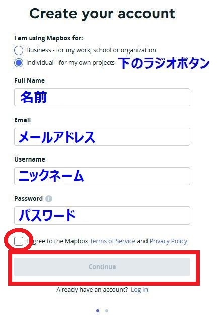 - クレジットカードの登録
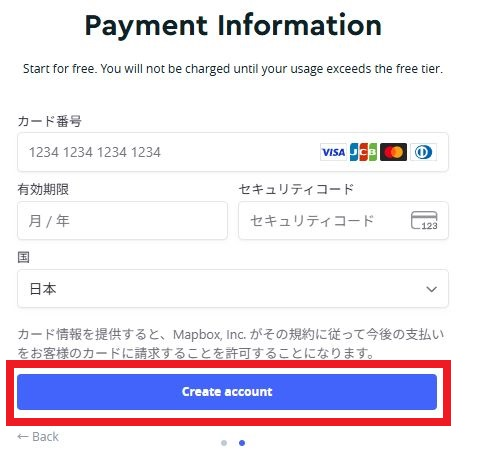 - 登録したアカウントでログイン
- 左上の三本線からTokensを押す
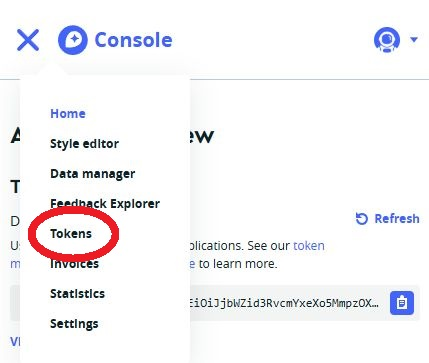 - Create a Tokenボタンを押す
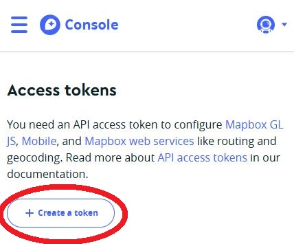 - Nameには適当にnaviとかを入力して画面一番下のCreate tokenボタンを押す
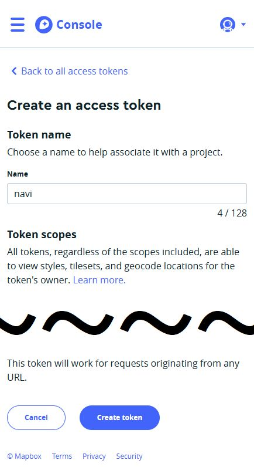 - トークンが出来上がるのでボタンを押してコピー
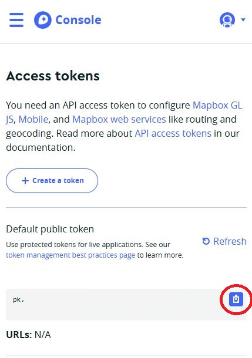 - コピーしたトークンをアプリの地図トークンに貼り付け
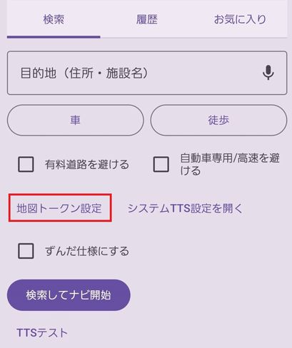
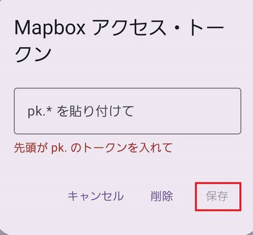 - 保存を押して背景の地図が読み込まれたら成功！読み込まれなかったら何か失敗してます。
🗺️ Mapboxでトークン取得
- Mapboxで新規登録
- ユーザー登録(パスワードは大文字小文字記号の複合が必須)
- クレジットカードの登録
- 登録したアカウントでログイン
- 左上の三本線からTokensを押す
- Create a Tokenボタンを押す
- Nameには適当にnaviとかを入力して画面一番下のCreate tokenボタンを押す
- トークンが出来上がるのでボタンを押してコピー
- コピーしたトークンをアプリの地図トークンに貼り付け
- 保存を押して背景の地図が読み込まれたら成功！読み込まれなかったら何か失敗してます。
📢TTSの設定
-
元々ずんだもんに音声案内させたかったのでずんだもん用(VOICEVOX)の設定
- ボイボTTSをインストール
- ボイボTTSを起動して声の場所をタップ
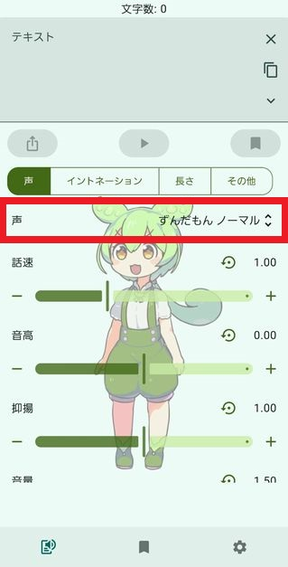 - ずんだもんをダウンロード
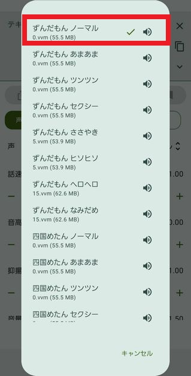 - Androidの端末設定でテキスト読み上げの項目を開く(Naviアプリから開いてもOK)
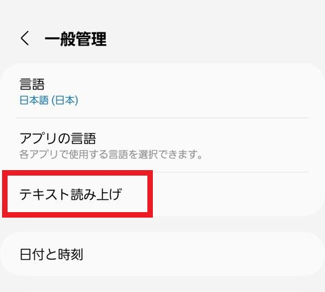 - 優先エンジンをボイボTTSに変更
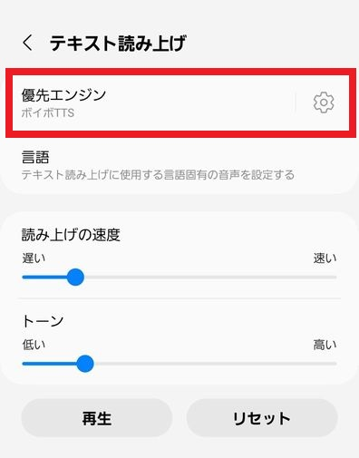 - Naviアプリを起動してTTSテストボタンを押して設定したボイスが流れたら成功！
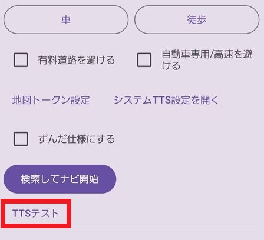 - ずんだ仕様にすると語尾が全部～のだになります
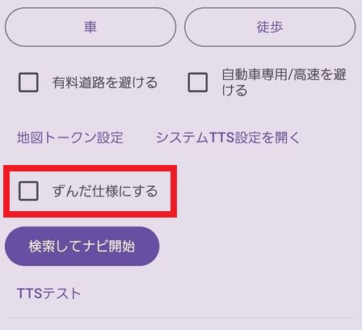 - ナビを開始したら右上のスピーカーボタンを一度押してミュートにしてください。デフォルトの声とダブります。
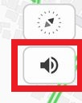